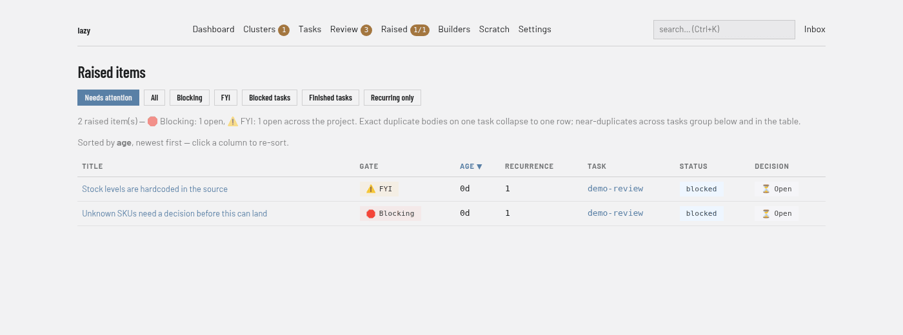
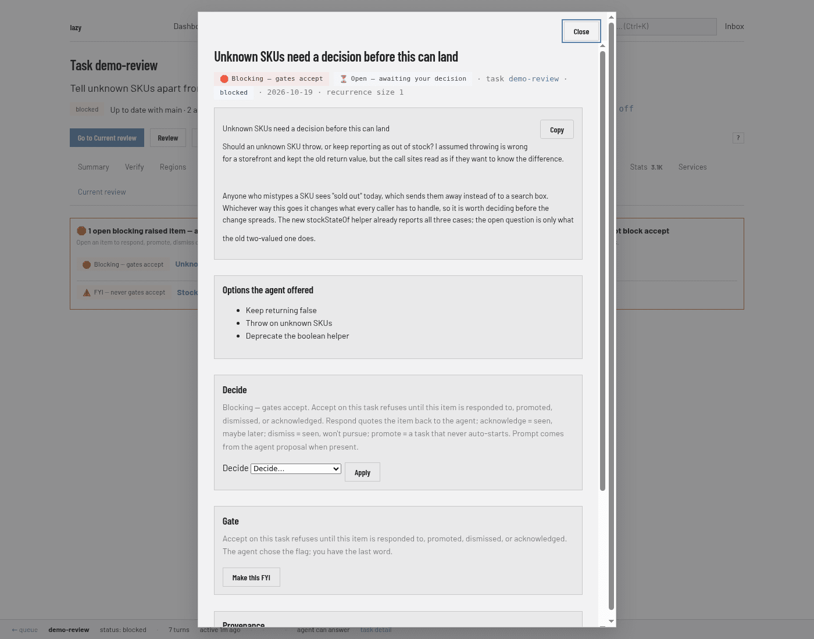

Lazy Teams adds a sixth option, Unblock agent, next to these five: it responds to the item with your note and resumes the agent in the same step (a note is required). Other open blocking items on the task stay open, and the form says how many.
Raised items
A raised item is anything an agent surfaces to a human: a decision it needs before its work should merge, or a piece of orthogonal work it noticed on the way. One entity, one queue, one set of triage verbs — the difference is a single flag.
| Blocking | Non-blocking | |
|---|---|---|
| What it is | A question or decision about this task's own scope or diff | An orthogonal proposal, or an FYI |
Gates lazy accept |
Yes — every open one must be resolved | No |
Recording an item is passive either way: it starts no turn, changes no status, and notifies nobody.
A blocking item is one of the ways a turn ends
Filing a blocking item is the agent saying I need a person before this goes
further — which is one of the three
turn endings, and it excludes the other
declared one. lazy_final ("the work is done") refuses while a blocking item is
open on the task, and the refusal names the item.
Two practical consequences:
- An agent that files a blocking item is not asked, at the end of its turn, where it stands. It already said.
- An agent that declared the work done and then discovers it needs a decision files the blocking item as usual. The earlier declaration stays in the record, and the open item gates accept on its own.
Raising
From a task agent, call lazy_raise. blocking is required — the agent has to
make the call, and the rule it follows is the one in the table above. The flag is
its opening judgement, not the last word: you can change it at review.
Agents are told to decide cheap two-way doors themselves. Before raising
anything blocking, an agent asks whether the choice is reversible at low cost: if
one option can ship now and you can flip it with a one-line unblock afterwards,
it takes that option, does it, and records the decision in its report (with a
non-blocking item when you should see the alternative it did not take).
blocking: true is for one-way doors — irreversible data or security effects,
changes to external surfaces, or options so different that a wrong pick costs
more than a review round. Waiting on you for something you can reverse in a
minute is the expensive choice, not the safe one.
A reviewer agent raises almost nothing. The findings of an automatic review are feedback delivered to the implementer, not items on your queue; the one thing a reviewer raises is that the task cannot be completed without compromising security or data integrity, or that its goal contradicts itself. A fixable defect — of any severity — is a finding, because there is nothing there for you to decide.
Agents should file structured proposals when they can:
- title — the behavior that should change, in one line
- explanation — why it matters and what scope you suggest
- proposed_code — suggested kebab-case task code
- proposed_prompt — what a promoted task should tell its agent
A bare content also works; promotion falls
back to a first-sentence goal and a synthesized prompt when no proposal is
present.
title and content are independent: file both and the item keeps both — the
headline for listings, the body underneath it, and the explanation after that.
An item filed with only a title gets its body composed from the title and
explanation, so it is never blank.
Write them behavior-first
An item is read by a human deciding whether to spend time on it, so it leads with what should be different for a user or operator, and why. Implementation pointers — files, functions, endpoints, measurements — come last, as breadcrumbs for whoever picks it up. A title that names a function is written wrong: the reader then has to open the code just to learn what is being asked for.
Bad:
title:
SessionCache.sweep()runs on every request inhandleUpload
Good:
title: Uploads stall for a second or two once the cache is warm
explanation: Anyone uploading a file waits on cache maintenance that has nothing to do with their request, and it gets worse the longer the process runs. Scope: move the maintenance off the request path; no behavior change otherwise. Implementation:
SessionCache.sweep()is called fromhandleUpload, ~800 ms at 10k entries.
Raised items are not the channel for a broken environment (that is
lazy_message_post), for progress notes (those belong in the turn report), or
for deferring work the task needs in order to be correct (finish that).
The accept gate
lazy accept (and lazy_accept over MCP) refuses while any blocking
item is still open. Non-blocking items never gate — they are listed for triage
and nothing more.
Every open blocking item must be resolved:
| Action | Meaning | Needs a response? |
|---|---|---|
| Respond to agent | Quote the item and send your reply as a comment on the next turn | Required |
| Promote to subtask | Create a child task under this one and tell the agent so it stops re-raising | Optional extra note |
| Promote to peer task | Create a sibling task (same parent) and tell the agent so it stops re-raising | Optional extra note |
| Dismiss | Seen; you will not act on it. The agent is told, with your reason | Required reason |
| Acknowledge | Seen; maybe later. Nothing is started | Optional note |
Acknowledge and dismiss are the same act — you saw it and are taking no action — and differ only in tone: dismiss says "I won't do anything about this", acknowledge says "maybe later". Keeping both lets you see, over time, whether what agents raise is mostly one or mostly the other. Either one works on any item, blocking or not.
All five actions close the accept gate and schedule a comment. The comment
is not written at resolve time — it lands on the next lazy unblock or
lazy accept, so you can change or undo the decision until then.
Both promotions are created by lazy itself at that same moment, so they work whether you resolve at unblock or at accept — you never depend on the agent taking another turn. They differ only in where the new task sits: a subtask stacks under the task you are reviewing, a peer task sits beside it. Either one inherits the reviewed task's agent, model and reasoning effort, and its prompt carries the raised item, your note, and where it came from. If you promote to a subtask while accepting, the new child is re-parented onto the accepted task's target, exactly like any other unfinished child.
Resolution is all-or-nothing: name every open blocking item, or accept refuses
naming the missing ones. --yes does not skip this — same idea as the
approval passphrase on protected merges. Non-interactive callers pass the flags
or MCP params explicitly.
CLI
lazy accept <task> \
--respond-raised a1b2c3d4="use option 2" \
--promote-raised-subtask e5f6g7h8 \
--promote-raised-peer i9j0k1l2="track separately" \
--dismiss-raised m3n4o5p6="out of scope for this task" \
--acknowledge-raised q7r8s9t0
Any of the five resolves a blocking item and counts toward the required set. They
also work on an open non-blocking item: while you are already here, you can
acknowledge or dismiss one rather than making a second trip through
lazy raised.
On an interactive terminal with no flags, accept walks each open blocking item and prompts for respond / promote to subtask / promote to peer / dismiss / acknowledge.
MCP
lazy_accept(task_id="…", raised_resolutions=[
{ id: "a1b2c3d4", action: "respond", response: "use option 2" },
{ id: "e5f6g7h8", action: "promote_subtask" },
{ id: "i9j0k1l2", action: "dismiss", response: "out of scope" },
{ id: "q7r8s9t0", action: "acknowledge" },
])
Unblock
lazy unblock / lazy_unblock may optionally resolve named items the same way.
Unlike accept, a partial set is fine — unresolved items stay open for the next
accept. Resolutions are never inferred from feedback prose. Pending comments from
earlier resolutions are written as real comments on that unblock (or on accept,
if you never unblocked).
Per-task triage
lazy show <task> always includes that task's raised_items array in full,
blocking and non-blocking alike. That is the per-task triage queue at review
time, and short ids to use with the commands below come from there.
lazy raised respond <task> <id> "ship option 2"
lazy raised acknowledge <task> <id> [--note "..."] # seen, maybe later; ack is an alias
lazy raised dismiss <task> <id> [--reason "..."]
lazy raised promote <task> <id> [--subtask|--peer] [--goal "..."] [--code <code>]
lazy raised blocking <task> <id> <true|false> # correct the agent's flag
promote creates a backlog task (it never auto-starts). The goal defaults
to the item's title when the agent filed a structured proposal, otherwise the
first sentence of its body (a long sentence is cut at a word boundary, not
mid-word). The code defaults to proposed_code when present, otherwise
kebab-case derived from the goal; if that code is in use, a -2, -3, … suffix
is added. Pass --code to choose one. The prompt defaults to proposed_prompt.
--peer (the default) makes a sibling, --subtask a child; --parent
overrides. Promotion inherits the originating task's agent, model, and effort.
First triage wins; re-promote is refused. Promoted items carry a durable link to
the new task (promoted_task_id).
MCP: lazy_raised_promote — the same
promote path, builder only. Task agents are rejected: promotion is a vetting act,
not something an agent does to its own notes.
Cross-task listing
The web dashboard lists every raised item in the project at /raised (open by default; add
?all=1 for triaged items):

The listing
is sorted by age, newest first, stated in a line under the filters, and every
column header is a link that re-sorts the listing — clicking the column you are
already sorted by flips the direction. A Blocking column and filter buttons
sit alongside the existing ones. The Recurring only view ranks by recurrence
size instead, biggest recurrence first, matching what lazy raised -r prints.
Filters and order compose: an order you picked survives a change of filter, and
re-sorting keeps the filter you are looking through. The gate filters are
labelled Blocking and FYI, the same two words the badges below use.
The open view, in the dashboard and in Lazy Teams, shows only items from tasks that are
blocked — the ones waiting on you. All shows every state and every task;
Blocked tasks and Finished tasks narrow the task side, and ?status=any,
?status=blocked or ?status=complete-only pick a task filter in the URL.
Each item has a detail page whose main content is one Decide control — respond, acknowledge, dismiss with a note, or promote (goal and code you can edit) — alongside the body, where it came from, a blocking toggle, and its promoted task once promoted. The review page's raised-items block offers the same control, so a decision looks the same wherever you make it.

Near-duplicate recurrences appear in a summary section and as grouped rows in the table (one row per recurrence, all originating tasks linked).
The Raised nav entry carries a badge — 2/11 means two open blocking and
eleven open non-blocking, blocking first; a plain number means non-blocking only.
See the nav counts.
On the command line, lazy raised lists the same items:
lazy raised # open items needing attention (newest first)
lazy raised --blocking # only the ones that gate accept
lazy raised --non-blocking # only the ones that never gate
lazy raised --all # include resolved items
lazy raised --status complete-only # originating task is complete (work landed, item may still be open)
lazy raised --min-age 7 # at least a week old
lazy raised -r # recurrences only (size ≥ 2)
lazy raised -q "retry helper" # substring search on body
MCP: lazy_raised_items — the same data for
builders, read-only, with a blocking filter. Returns every triage state by
default; pass open_only: true to match the CLI/web "needs attention" filter.
Recurrence
The listing groups near-duplicates mechanically (shared vocabulary, Jaccard
similarity on significant words). On /raised and with lazy raised -r, a
recurrence of ten similar items across ten tasks shows as one grouped row (or one
recurrence summary line) with a count and every originating task — the signal that a
real task may be missing. Exact duplicate bodies on the same task collapse to
one stored record and one listing row.
Promotion hints
Promoted items show their task code in the listing and leave the default "needs attention" view. Folding into scope or deliberately dropping an item leaves no promote record — those stay in the listing until you judge them stale.
What to do at review
For each item (per task or from lazy raised):
- Fold into scope — send back via
lazy unblockif the task actually needs it to be complete. - Promote —
lazy raised promote(or the Decide control on the item page and the review page, orlazy_raised_promotefor the builder). Creates a backlog task; you start it when ready. - Respond — answer the agent; the reply rides the next turn.
- Acknowledge or dismiss — record that you looked without creating work.
- Re-flag —
lazy raised blocking <task> <id> true|falseif the agent judged it wrong; promoting a non-blocking item to blocking is how you make accept wait for a decision the agent under-weighted.
Never bulk-promote: each item is a candidate, not an automatic backlog entry.
Contrasted with the other channels
| Channel | Purpose | Blocks accept? |
|---|---|---|
| Raised item (blocking) | Decision needed before merge | Yes |
| Raised item (non-blocking) | Orthogonal discovery or FYI; triage later | No |
| Turn report | Typed "what happened" for the reviewer (lazy_report) |
No |
| System message | The environment is broken and only a human can fix it (lazy_message_post) |
No |
lazy ask |
Synchronous reflective Q&A mid-review | No |
| Raised item | Comment | Journal | |
|---|---|---|---|
| Triggers a turn | No | No | No |
| In agent prompt | No | Yes (next turn) | No (count only) |
| Cross-task view | lazy raised |
— | — |
| Blocks accept | Only when blocking | No | No |
All of these are written in markdown and render as markdown in the web UI —
headings, lists, links and code fences all work, and multi-paragraph entries are
normal. lazy show, lazy journal and lazy comment print them as plain text
in the terminal.
Links render only when they point somewhere safe: an ordinary http, https or
mailto address, or a link within the dashboard. A link using any other URL
scheme is shown as plain text — you see that it was there and where it pointed,
but it cannot be clicked. Some of this text does not come from you: a comment
synced from a pull request carries whatever that PR body said, and the dashboard
is the origin holding your session, so a clickable script link would run with the
same authority as the buttons next to it.
Who decided
Every decision records who made it, and every surface that shows a decided item
shows the decider: the item's own panel and the review page say Decided by
…, lazy show --full prints a decided by: line, and the /raised listing
and lazy raised tag the row.
On a single-user install that is the role — human. When you are signed in as a member of a team, the record also names you,
so a team can see which member responded to, acknowledged, dismissed or promoted
each item rather than an anonymous "human". The same applies to the two other
decisions on an item: changing whether it gates accept records who changed it,
and undoing a decision before it reaches the agent records who reopened it.
How an item is labelled in the web UI
Wherever a raised item appears — the task page, the /raised listing, an item's
own panel — it carries two badges, and they say the same thing on every surface:
| Badge | Means |
|---|---|
| 🛑 Blocking | Gates accept. lazy accept refuses until you decide it. |
| ⚠️ FYI | Never gates accept. |
| ⏳ Open | Nobody has decided it yet. |
| ✅ Responded / Acknowledged / Dismissed / Promoted to subtask / Promoted to peer task | What you decided. A promoted item links to the task it became. |
Every badge pairs its symbol with a word, so nothing depends on the symbol
rendering. lazy raised uses the same two words in its GATE column (without
the symbol, which would misalign the table in some terminals).
Ids are not shown in these lists — the titles link where the id would take you.
The one place an id appears is under Provenance on the item's own panel, as
the Item id, in full: that is the value lazy accept's resolution flags
take, as in lazy accept <task> --respond-raised <id>=<your answer>. Nothing is
shown as a truncated hex prefix, which would be neither readable nor usable.
Review surfaces
The web review page and lazy browse show open raised items (and the agent's
structured report when present) above the diff, so the questions are the
first thing you see — blocking ones first, in one card list with the non-blocking
ones under them.
Lazy Teams shows open blocking items on the task page's Current review and open items of both kinds on the accept page, and lets you resolve them inline; every item shows when it was raised (ISO 8601, UTC) and the turn it was raised in, linked to that turn, and an open item offers Ask, Comment and Unblock right on it, quoting the item to the agent; a decision can be undone from the item's own Raised page until the next unblock or accept. Its project nav has a Raised page — the same cross-task queue, blocking first, with a blocking/FYI filter, a toggle on every row for the flag itself, and a badge counting open blocking and open FYI separately. See Reviewing tasks in Lazy Teams.